Authors: Guodong Jiang, Aaron Dunbrack, Tero Heikkilä, Päivi Törmä
Type: theory · Category: strongly correlated electrons · PDF: https://arxiv.org/pdf/2606.06791v1
Analysis basis: full PDF text, analyzed in chunks
Topic relevance: Frenkel-Kontorova 2/5 · Keldysh / 2PI / non-Gaussian methods 1/5 · analog quantum simulation 1/5 · spintronics-quantum-optics interface 1/5
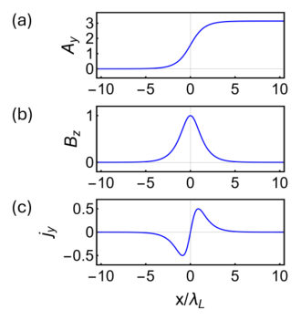
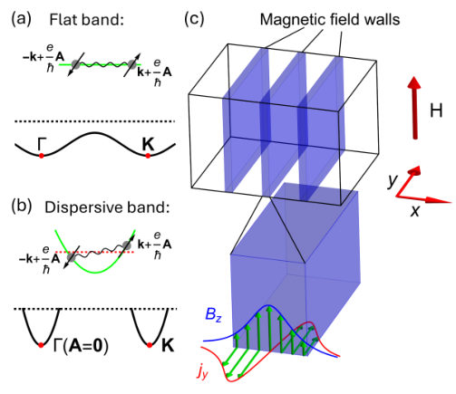
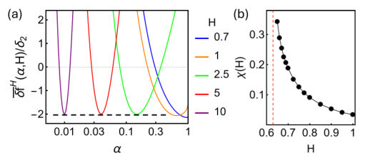
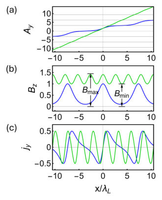
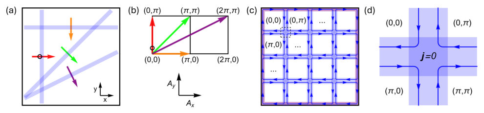
Summary. This work predicts that flat-band superconductors can sustain superconductivity even under very large magnetic fields by forming stable magnetic flux wall phases. By modeling the system's free energy using a cosine potential, the authors solve the resulting sine-Gordon equation to determine critical field thresholds and show these walls are energetically favorable compared to traditional vortices.
Why it may be interesting. The mechanism described—where band structure dictates a topological superconducting state (walls) that persists at high fields—is highly relevant for understanding exotic superconductivity in engineered quantum materials.
Main problem. The study predicts a stable superconducting phase exhibiting walls of magnetic flux within flat-band superconductors when subjected to an applied magnetic field.
Main result. Flat bands stabilize superconductivity in large magnetic fields by favoring the formation of these magnetic wall phases over conventional vortex lattices. This stability is due to the global negativity of the superconducting free energy functional $f_s(A)$.
Method. The analysis employs a minimal lattice-periodic model for the free energy density and solves the resulting sine-Gordon equation to find soliton solutions (kinks and breathers).
Model / system. The system is flat-band superconductors, modeled using an effective free energy functional $f_s(A)$ that exhibits periodicity. The physics is analyzed by comparing the energy of magnetic wall arrays against traditional vortex lattices.
Key observables. Lower critical field ($H_{c1}$), superconducting free energy density $f_s(A)$, and soliton solutions (kink/breather).
Important parameters / regimes. Flat band characteristics, applied magnetic field $H$, penetration depth ($\lambda_L$), and lattice parameters ($a$).
Assumptions / limitations. The analysis assumes a continuum solution form and relies on the specific functional form of the free energy derived for flat bands.
Figures summary. Figures illustrate the schematic formation of magnetic walls from global negativity of $f_s(A)$, and plot the spatial profiles of vector potential ($A_y$), magnetic field ($B_z$), and current density ($j_y$) for kink and breather soliton modes.
Paper structure. The paper develops the free energy functional based on flat-band properties, derives the governing sine-Gordon equation from Maxwell's equations, solves this equation using kink/breather ansatzes to determine critical fields, and finally compares the resulting wall phase energy against vortex energies.
Superconductors of different types have distinct magnetic properties; for example, they can form Abrikosov vortices or alternating normal-superconducting domains. We predict that, in flat bands, a superconducting phase exhibiting walls of magnetic flux is stable in an applied magnetic field. This phase relies on the lack of a single particle energy penalty for forming condensates of any momentum in flat bands and, consequently, their superconducting free energy being a negative and periodic function of the vector potential at low temperatures. Using a minimal lattice-periodic model of free energy, we study two types of soliton modes of the wall phase: the kink and breather solitons. They determine the lower critical field and the high-field behavior of the wall phase, respectively. The competition between the walls and vortices in flat bands is also discussed. Our results suggest that flat bands help sustain superconductivity in the presence of large magnetic fields.
Authors: Katsunori Wakabayashi
Type: theory · Category: disordered systems and neural networks · PDF: https://arxiv.org/pdf/2606.06780v1
Analysis basis: full PDF text, analyzed in chunks
Topic relevance: Keldysh / 2PI / non-Gaussian methods 1/5 · driven-dissipative phase transition 1/5 · methods for driven-dissipative 1/5
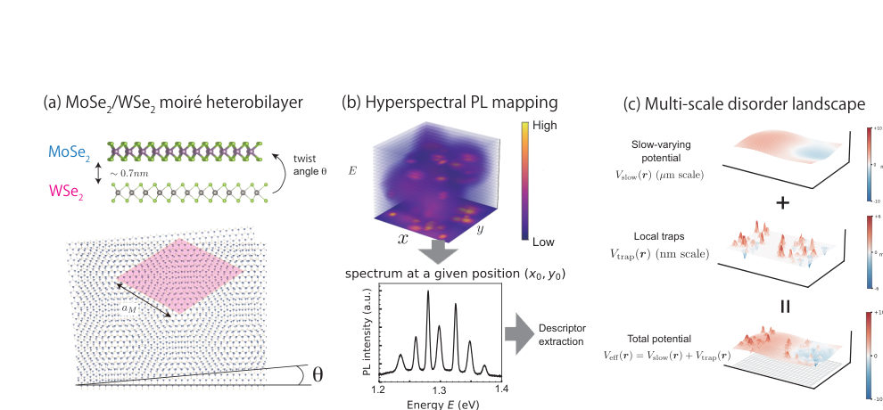
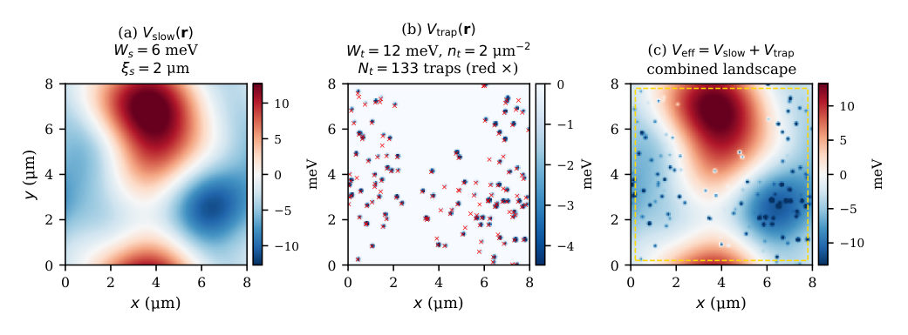
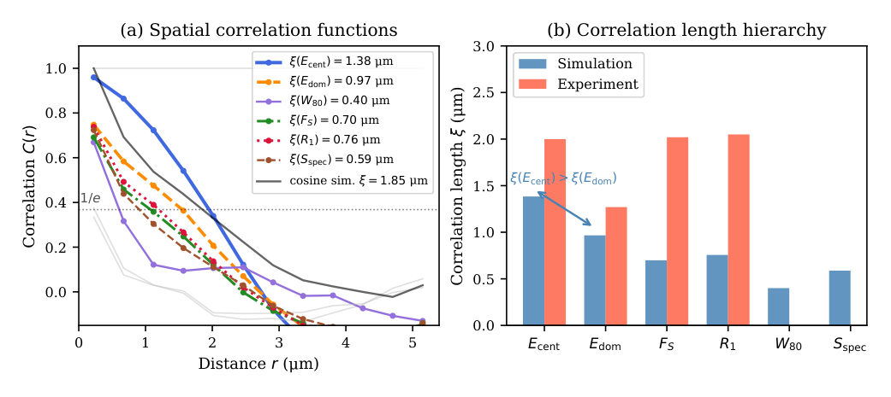
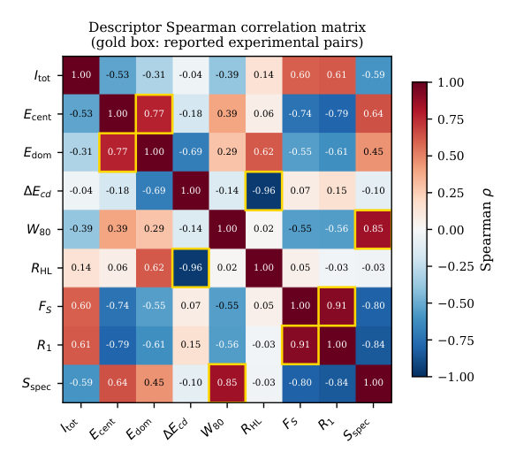
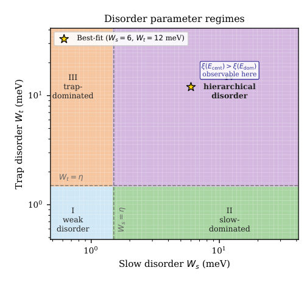
Summary. The paper develops a theoretical framework to analyze the spatial organization of photoluminescence spectra in moiré heterobilayers using spectral descriptors. By analyzing the correlation hierarchy between these descriptors, the authors successfully extract four independent effective disorder parameters that characterize the underlying multi-scale random potential landscape. This provides a robust, peak-decomposition-free method for characterizing complex quantum materials.
Why it may be interesting. This work provides a powerful, model-independent statistical tool for characterizing complex disorder landscapes in quantum materials by translating spectral fingerprints (descriptors) directly into physical disorder parameters.
Main problem. Developing a minimal theory for the spatial organization of photoluminescence spectra in moiré heterobilayers by analyzing how different spectral descriptors probe multi-scale disorder.
Main result. The study establishes a quantitative correlation hierarchy, $\xi(E_{ ext{cent}}) \geq \xi(E_{ ext{dom}})$, which allows for the extraction of four effective disorder parameters ($\xi_s, W_s, W_t, n_t$) from measurable spectral statistics.
Method. The analysis uses a descriptor-based disorder-filter picture, relating measured spectral correlations (like Spearman coefficients) to underlying spatial disorder potentials via coarse-graining and statistical theory.
Model / system. The system is moiré heterobilayers ($ ext{MoSe}2/ ext{WSe}_2$) where the exciton center-of-mass motion is governed by an effective potential decomposed into slow, correlated disorder ($V$).}}$) and local trap potentials ($V_{ ext{trap}
Key observables. Nine peak-decomposition-free spectral descriptors including Centroid Energy ($E_{ ext{cent}}$), Dominant Energy ($E_{ ext{dom}}$), $\Delta E_{cd}$, $W_{80}$, and the correlation lengths ($\xi$).
Important parameters / regimes. Disorder parameters: slow disorder length scale ($\xi_s$), amplitude ($W_s$); trap variance ($\sigma^2_\delta$) and density ($n_t$). The hierarchy $\xi(E_{ ext{cent}}) \geq \xi(E_{ ext{dom}})$ is key.
Assumptions / limitations. The analysis relies on the separation of disorder scales (slow vs. local) and assumes that spectral descriptors can be mapped robustly to underlying potential fluctuations without needing explicit microscopic line assignment.
Figures summary. Figures illustrate the spatial correlation functions $C(r)$ for various descriptors, confirming the predicted hierarchy $\xi(E_{ ext{cent}}) > \xi(E_{ ext{dom}})$, and show the mapping of experimental data onto four distinct disorder regimes.
Paper structure. The paper progresses from defining the physical problem (PL spectra organization) to developing a descriptor-based statistical framework. It then derives the correlation hierarchy, establishes a quantitative parameter extraction protocol using multiple descriptors, and finally maps the experimental system into a specific 'hierarchically disordered regime.'
We develop a minimal theory for the spatial organization of photoluminescence spectra in moiré transition-metal dichalcogenide heterobilayers. Motivated by hyperspectral mapping of MoSe$_2$/WSe$_2$, which reveals micron-scale correlations among nine peak-decomposition-free spectral descriptors, we propose a descriptor-based disorder-filter picture in which different descriptors probe different components of a multi-scale disorder landscape, producing a hierarchy of spatial correlation lengths. The central result is the correlation hierarchy $ξ(E_{\rm cent}) \ge ξ(E_{\rm dom})$, derived from the decomposition of the dominant-peak energy into a smooth background contribution and a short-range trap-switching fluctuation term. The same framework explains the principal inter-descriptor Spearman correlations, including the near-perfect anti-correlation $ρ_{\rm S}(ΔE_{\rm cd}, R_{\rm HL}) \approx -0.978$ as a robust spectral-shape relation for spectra with a dominant unimodal envelope. The framework provides a peak-decomposition-free route to infer effective disorder parameters from hyperspectral data through the descriptor covariance structure, without microscopic line assignment.
Authors: Roberto Capuzzo Dolcetta
Type: experiment · Category: other · PDF: https://arxiv.org/pdf/2606.07256v1
Analysis basis: full PDF text, analyzed in chunks
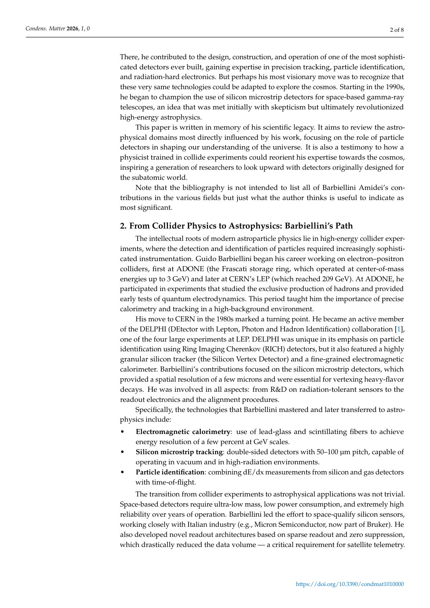
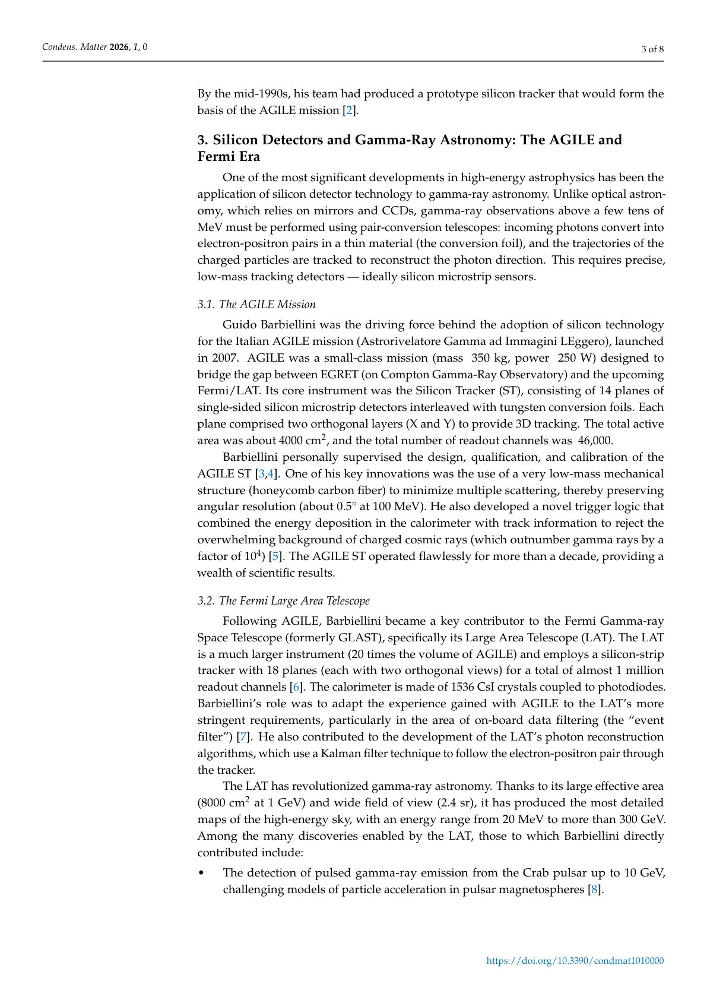
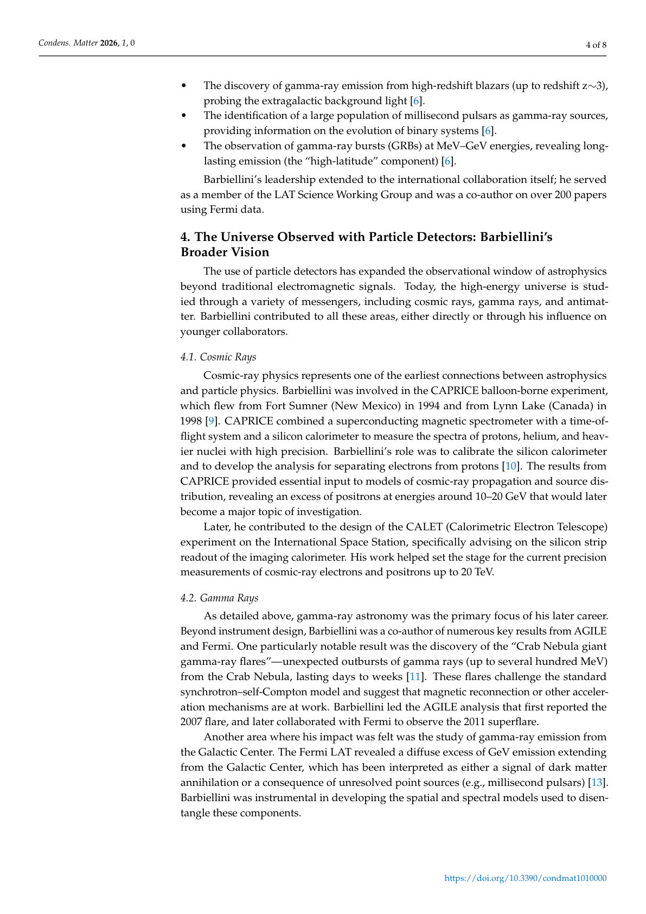
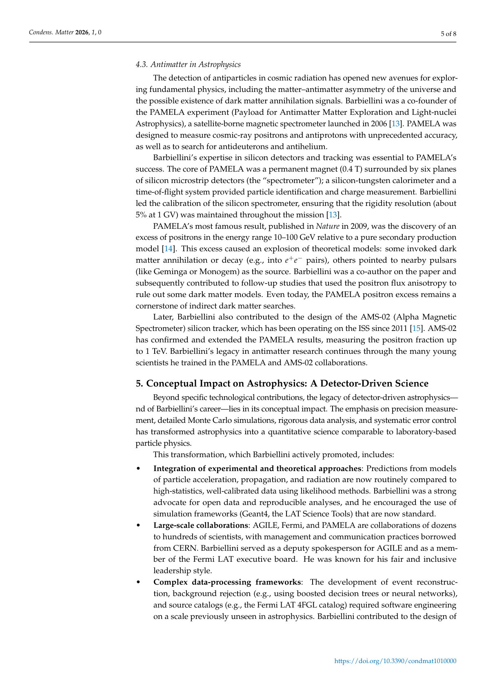
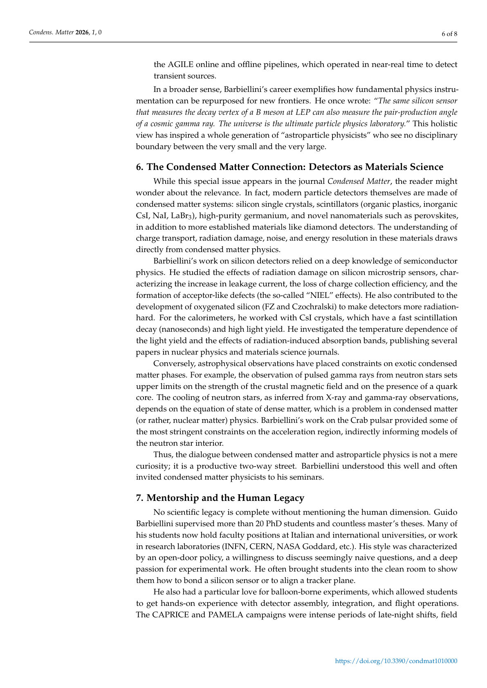
Summary. This memorial paper reviews how high-energy astrophysics has evolved into a field dictated by technological advances in particle detectors. It highlights Guido Barbiellini Amidei's crucial role in bridging collider physics expertise to space missions like Fermi LAT and AGILE. The work summarizes key findings regarding gamma rays, cosmic rays, and antimatter, establishing the foundation for future multi-messenger astronomy.
Why it may be interesting. While the subject is astrophysics/particle detection, the rigorous discussion of detector physics, background rejection techniques, and data analysis pipelines shares methodological overlap with complex experimental quantum systems characterization.
Main problem. To review the evolution of high-energy astrophysics as a science driven by advances in particle detector technology, focusing on Guido Barbiellini Amidei's pivotal role.
Main result. The paper demonstrates that modern high-energy astrophysics has successfully transitioned into a 'detector-driven science,' enabling detailed observations across gamma-ray astronomy, cosmic rays, and antimatter.
Method. Reviewing the technical advancements in detector design (silicon tracking, calorimetry) and their application to space-based missions like AGILE and Fermi LAT, alongside analyzing key astrophysical measurements.
Model / system. The physical systems involve high-energy cosmic rays, gamma rays, and antimatter interacting with advanced particle detectors. The platforms include electron-positron colliders (ADONE, LEP) and space telescopes (Fermi, AGILE).
Key observables. Gamma-ray spectra (e.g., Crab pulsar flares), positron excess in cosmic rays (PAMELA/AMS-02), and multi-messenger signals from astrophysical events.
Important parameters / regimes. Energy resolution ($\sim$ few percent at GeV scales); spatial resolution ($\sim$ microns); energy ranges spanning MeV to TeV.
Assumptions / limitations. The review assumes the continued development of detector technology and the integration of experimental results with theoretical models for understanding cosmic sources.
Paper structure. The paper follows a historical and thematic structure, tracing Barbiellini's career from collider physics to pioneering space-based instrumentation, reviewing key domains (gamma-rays, cosmic rays), and outlining future multi-messenger perspectives.
The development of modern high-energy astrophysics has been deeply intertwined with advances in particle detector technology. Guido Barbiellini Amidei (1943-2024) played a pivotal role in bridging experimental particle physics and astrophysical observation. His scientific career spanned over four decades, from early electron-positron collider experiments at ADONE and LEP (DELPHI) to space based missions such as AGILE, Fermi, and PAMELA. This memorial paper reviews the evolution of high-energy astrophysics as a detector-driven science, highlighting key domains where Barbiellini left an indelible mark: gamma-ray astronomy, cosmic-ray physics, and antimatter studies. We discuss his personal contributions to silicon tracking, calorimetry, data analysis, and his leadership in international collaborations. The conceptual impact of his interdisciplinary approach is examined, and future perspectives in the observation of the high-energy universe are outlined, recognizing that the path forward is built on the foundations he helped lay